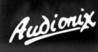
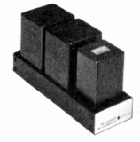
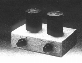
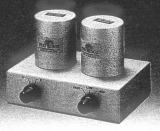
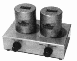
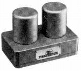
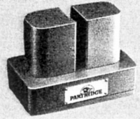
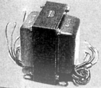
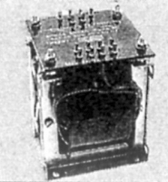
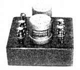

AUDIO NIX(オーディオニックス）
オーディオニックスは1970年代後半までのオルトフォンの代理店だった。オルトフォンの代理店は1970年代末にハーマン・インターナショナルに代わったが、オーディオニックスはアナログ関連から完全に撤退した訳ではなかった。新たな製品はMCカートリッジ用の昇圧トランスである。最初の製品であるヘッドアンプADN-�Vと共に、イギリスの名門トランスメーカー、パートリッジのトランスTH7559を使用したキットを発売した。その後はパートリッジのトランスを使用した完成品を販売するようになった。1990年代初頭には平行して、パートリッジ自身の完成品も扱った時期もある。しかし1993〜95年頃、ブランドは消滅した模様。
�T.ヘッドアンプ・昇圧トランス
最初の製品であるADN-�Vの発売が1977年である。1979年にトランスTH7559を使用したキット、TH7559-K及びその完成品を発売した。
（1）ヘッドアンプ

(2)昇圧トランス

(TH7559)
(TH7834)
(TH7834 MK�U)
(TH-9708)注 オーディオニックス扱いのパートリッジ・トランス使用製品には、他にTK-3952があるが、これはノイズカット用のライントランスである。また筐体に納めない部品としてのトランスも扱っていたようだ。



（左 ライントランスTK-3952 中央 P.P用出力トランスTK-3410 右 シングル用トランスＴＫ-2207）
注 オーディオニックスとパートリッジの関係について
当サイトは基本資料を「Stereo Sound YEAR
BOOK」としており、この本で「オーディオニックス」の区分で掲載された製品は、「オーディオニックス」製品として扱っている。他の資料では「オーディオニックス」時代のものも「パートリッジ」として扱っているものもあるようだが、どこまでが「パートリッジ」の設計かわからない為、当サイトも「オーディオニックス」の製品として扱う。なお「Stereo
Sound YEAR
BOOK」の1993年版では、TK-5423から「パートリッジ」の区分で掲載している。そして1995年版では「パートリッジ」の代理店は「リスニングデバイスディビジョン」となっている。
なお、当サイトの基準による「パートリッジ」の昇圧トランスで資料があるものは3機種と少ない為、独立ページを設けず、ここに併記する。なぜか「パートリッジ」区分の製品は、「オーディオニックス」区分の製品より小型・軽量タイプである。
(3)昇圧トランス（パートリッジ・ブランド）

�U.その他
シェルとリードワイヤーがあった。